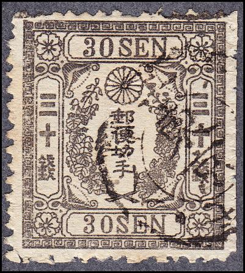
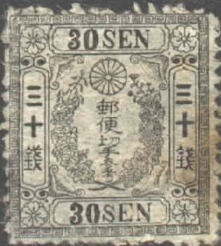
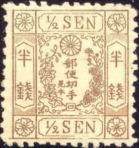
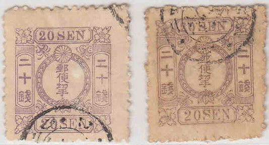

{kind=link}

Return To Catalogue - Japan Spiro forgeries of the 1872 issue - Japan
Note: on my website many of the
pictures can not be seen! They are of course present in the
catalogue;
contact me if you want to purchase it.
Examples of some forgeries:
Click here for Spiro forgeries of the 1872 issue
Other forgeries:


(Note the two small Japanese characters just above the lower part
of the circle in this forgery)
In the above 20 s forgeries, there are two 'San-ko' signs just
outside the circle at the level of the lower Japanese characters
in the left and right side.

This forgery of the 1 s value has the word 'Mo-zo' as lowest
character in the central design (just above the crossing
branches).
The word 'San-ko' can often be found included in the design of the forgeries, for an excellent website on these forgeries see: http://isjp.org/expert/Cherry_Blossoms/CB.html. It seems that 'Sanko' means 'reference' in Japanese. Examples of 'Sanko' forgeries:

(In this forgery the word 'San-ko' is written above the
"S" of the lower word "SEN"; below the other
characters of the central part of the stamp)

Some other 'San-ko' forgeries of the 10 s value

This forgery of the 30 s has two 'secret signs' at both sides
just below the chrysantheum

Forgery of the 10 s green.

(A Wada forgery)

(A Mozo forgery)



Mihon forgeries, there are extra Japanese signs in the design;
Mi-hon which means 'specimen', but is here used to indicate
forgeries.

Other forgeries:
Imperforate reprints in a minisheet, made in 1961

1961 reprints.

1961 reprints


More 1961 reprints
Very dubious 20 sen stamp.
{kind=link}
{kind=link}